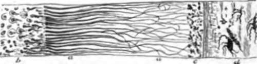
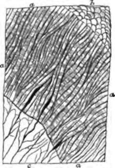
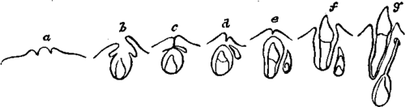

64. Dentine
Description
This section is from the book "Animal Physiology: The Structure And Functions Of The Human Body", by John Cleland. Also available from Amazon: Animal Physiology, the Structure and Functions of the Human Body.
64. Dentine
Dentine has a matrix yielding gelatin, and impregnated with mineral matter in slightly greater proportion than bone; but, instead of lacunæ, it contains a multitude of closely set tubes, which radiate from the pulp-cavity in an undulating nearly parallel course, getting smaller as they approach the surface, and giving off branches. Each tube contains an albuminoid fibre, which, at least in the young state, would appear to be an offshoot from a corpuscle at its inner or pulp-extremity, comparable with a bone-corpuscle; and as the dentine grows from without inwards, invading the pulp-cavity, these corpuscles travel inwards also. Crossing the substance of the dentine, faint lines may be often seen, called contour lines (Owen), which consist of chains of irregular spaces in the matrix, filled with less refractive material, and possibly caused by the influence of the irregular pressure to which the teeth are subjected.
Fig. 45. Dentine. At a, the section is parallel to the tubes; at ft, it cuts them across; c, granular layer (of Purkinje) resulting from the presence of small spaces connected with the extremities of the dentine tubes; d, crusta petrosa.
Fig. 46. Enamel, a, a, longitudinal section; b, free outer extremities of the prisms, seen in perspective; c, dentine.
Enamel is an exceeding hard substance, containing only 3 1/2 per cent, of animal matter, while the rest of it consists of phosphate of lime and other earthy salts. It is composed of solid vertical columns or prisms, the sides of which closely fit to one another, like pillars of basalt, but are by no means strictly parallel, for they interlace to a certain extent. They are about 1/5000 inch diameter, and have a transverse striation which is particularly distinct in the young state. The enamel prisms are crossed by bands of a brownish tinge called coloured lines, which have probably a similar origin to the contour lines of the dentine, both being most frequent in old teeth.
The crusta petrosa or cement (fig. 45, d,) is softer than dentine, and consists of a deposit of layers of solid bone-matrix, in which are sparsely scattered lacunæ, with very irregular canaliculi coming off from them. In the human teeth it is confined to the root, but in the complex crowned teeth of some animals, for example, the molars of the ox, it fills up depressions which dip deeply down into the crown, and is there situated superficial to the enamel. When such a tooth is worn, as it soon is after coming into use, the dark coloured crusta petrosa, filling up the complicated depressions, is seen surrounded by lines of pure white enamel, on the other side of which is the yellow dentine, somewhat hollowed out, as is also the crusta petrosa, from being softer than enamel.
55. Teeth, in their first development, have a considerable resemblance to hairs; for both make their first appearance, in the embryo, from tegumentary depressions filled with epithelium, and with a papilla at the bottom; and in both the depression becomes temporarily converted into a closed sac, which afterwards is burst open by the protrusion of the contained organ. The layer of epithelium immediately in contact with the tooth-papilla is converted into enamel, the enamel-columns corresponding with the elongated cells of the deepset layer of the cuticle. The dentine is formed from the superficial part of the papilla itself, while the remainder of that structure constitutes the pulp. The development of the tooth proceeds from the summit of the crown downwards, the pulp thus becoming gradually enclosed. The sacs of the permanent teeth make their first appearance from the necks of the sacs of the milk set at a very early period, while the latter are still open, and subsequently descend to positions beneath the milk teeth, which they are destined to replace.
Fig. 47. Development of a temporary and a permanent tooth (Goodsir). a, papilla on the floor of the primitive dental groove; b, papilla enclosed in a follicle in the bottom of the secondary groove, and opercula above the follicle; c, papilla become a pulp, and the follicle a sac, by adhesion of the opercular lips, and the secondary groove adherent, except behind the inner operculum, where it has left a shut cavity of reserve for the permanent tooth; d, e, temporary tooth increasing by growth downwards of the fang, and the permanent tooth-sac receding from the surface; f, temporary tooth appearing on the surface; g, permanent tooth-sac much removed from the gum, but connected with it by a cord which passes through a foramen behind the temporary socket.
Continue to:
- prev: 53. The Teeth
- Table of Contents
- next: 56. The Milk Teeth